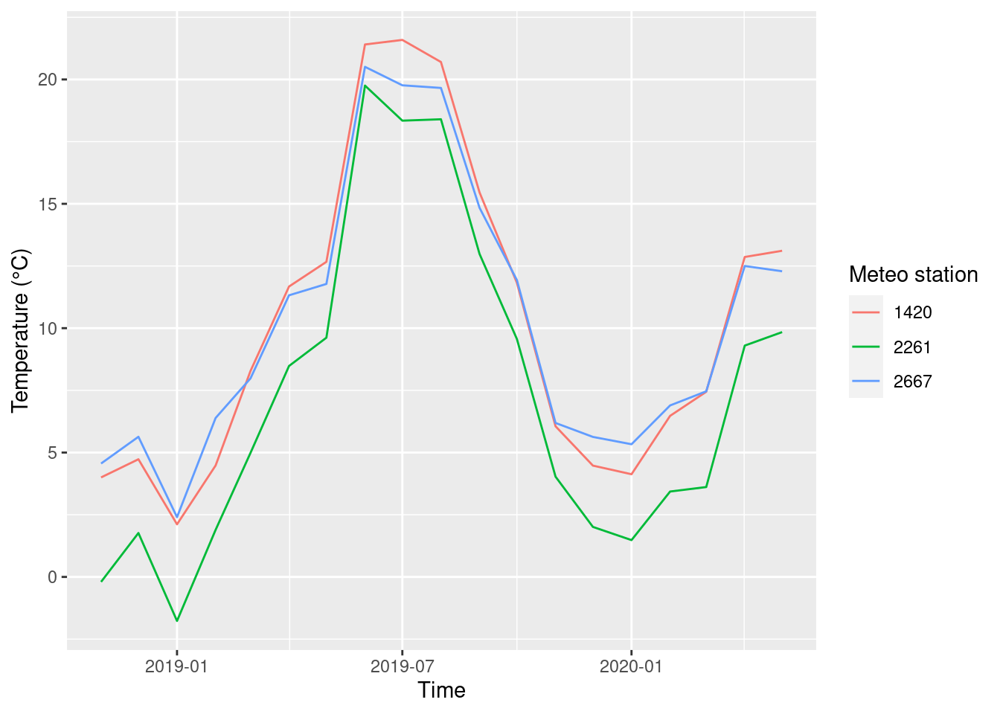

5 Explorative workflow with tidyverse
-
Name core packages in
tidyverse -
Apply a simple explorative workflow (read, summarize, plot) with
tidyverse -
Use functions from
dplyrfor data wrangling
tidyverse is a collection of R packages for data analysis (https://www.tidyverse.org/). It shares a common philosophy about how data should be structure and grammar of data manipulation and visualization. Although it might sound like something alien, tidyverse is a regular part of R and its functions can be mixed with base R functions.
The best introduction to tidyverse is r4ds: “R for Data Science” (Wickham and Grolemund 2021). You can read it for free here (https://r4ds.had.co.nz/).
5.1 Core packages
tidyverse comprises 8 core packages that are installed when you call install.packages('tidyverse'):
| Packages | Description |
|---|---|
ggplot2 |
data visualization |
dplyr |
data transformation |
tidyr |
data cleaning |
readr |
importing data |
purrr |
functional programming |
tibble |
extension of data.frame |
stringr |
functions for strings, i.e. text variables |
forcats |
functions for factor |
All packages have a Cheat Sheet, an overview of its functions. To get a package’s cheat sheet, click on its name (https://www.tidyverse.org/packages/), scroll down to the section Cheatsheet.
Besides its core packages, tidyverse also installs a long list of supplementary packages that you can find here: https://www.tidyverse.org/packages/
5.2 Exploratory data analysis
Exploratory data analysis is an essential first step in data analysis. Before using any advanced statistical method, exploratory analysis is a must-have. It comprises roughly the following steps:
- import and inspect data
- clean (tidy) data if necessary
- summarize it and create new variables if necessary
- plot as many plots as possible to get a good overview about patterns and data distribution
5.2.1 Read data, revisited
We load the library tidyverse first.
Last time we used the function read_delim() to import data into R. This function is the most general from a whole family of functions, all starting with read_*: read_csv(), read_csv2() etc. They all have their own parameters that you need to verify on the respective help pages if you want to use them.
For this exploratory data analysis, we will use data from the German Meteorological Service (Deutscher Wetterdienst) that I downloaded on 2020-05-24 (https://www.dwd.de/DE/leistungen/klimadatendeutschland/klimadatendeutschland.html). The data set contains hourly measurements of the relative air humidity (%), and air temperature (°C) for three weather stations, namely Hof, Frankfurt and Köln-Bonn. The data is named meteo.csv.
## Rows: 39600 Columns: 6
## ── Column specification ─────────────────────────────────────────────────────────────────────────────────────────
## Delimiter: ";"
## chr (1): eor
## dbl (5): STATIONS_ID, MESS_DATUM, QN_9, TT_TU, RF_TU
##
## ℹ Use `spec()` to retrieve the full column specification for this data.
## ℹ Specify the column types or set `show_col_types = FALSE` to quiet this message.read_delim() reports on reading the data about the variables it recognizes. This is a good hint to spot for possible problems. Are numerical variables read as <dbl>? Are characters recognized as <char> etc. In the code above, the parameter trim_ws = T removes leading zeroes.
Let’s have a short glimpse of the data.
## # A tibble: 39,600 × 6
## STATIONS_ID MESS_DATUM QN_9 TT_TU RF_TU eor
## <dbl> <dbl> <dbl> <dbl> <dbl> <chr>
## 1 2261 2018111900 3 -2.8 99 eor
## 2 2261 2018111901 3 -2.5 100 eor
## 3 2261 2018111902 3 -2.3 100 eor
## 4 2261 2018111903 3 -2 100 eor
## 5 2261 2018111904 3 -1.9 99 eor
## 6 2261 2018111905 3 -2.1 99 eor
## 7 2261 2018111906 3 -1.8 99 eor
## 8 2261 2018111907 3 -1.5 99 eor
## 9 2261 2018111908 3 -1.1 99 eor
## 10 2261 2018111909 3 -0.6 97 eor
## # ℹ 39,590 more rowsThe data set contains the following variables:
| Variable | Description |
|---|---|
| STATIONS_ID | ID of the weather station |
| MESS_DATUM | date and time of the measurement, formatted as yyyymmddhh |
| QN_9 | quality flag |
| TT_TU | air temperature in 2 m height in °C |
| RF_TU | relative air humidity in % |
| eor | end of record (i.e. end of line) |
read_* always returns a tibble.
## [1] "spec_tbl_df" "tbl_df" "tbl" "data.frame"5.2.2 Date and time made easy
A very useful package to handle date and time is called lubridate. It is not part of core packages in tidyverse but is installed with the long list of additional packages. We will use it to convert the variable MESS_DATUM to a real date-time variable.
The function ymd_h() converts character vectors to date-time objects provided they have the format year, month, day, hour. There are other function for different other formats; consult help.
## # A tibble: 39,600 × 6
## STATIONS_ID MESS_DATUM QN_9 TT_TU RF_TU eor
## <dbl> <dttm> <dbl> <dbl> <dbl> <chr>
## 1 2261 2018-11-19 00:00:00 3 -2.8 99 eor
## 2 2261 2018-11-19 01:00:00 3 -2.5 100 eor
## 3 2261 2018-11-19 02:00:00 3 -2.3 100 eor
## 4 2261 2018-11-19 03:00:00 3 -2 100 eor
## 5 2261 2018-11-19 04:00:00 3 -1.9 99 eor
## 6 2261 2018-11-19 05:00:00 3 -2.1 99 eor
## 7 2261 2018-11-19 06:00:00 3 -1.8 99 eor
## 8 2261 2018-11-19 07:00:00 3 -1.5 99 eor
## 9 2261 2018-11-19 08:00:00 3 -1.1 99 eor
## 10 2261 2018-11-19 09:00:00 3 -0.6 97 eor
## # ℹ 39,590 more rowsAfter conversion, the variables is recognized as <dttm> for date-time.
5.2.3 Summarize
The three weather station have the following IDs:
We want to know how many measurements per station the data set contains.
## # A tibble: 3 × 2
## STATIONS_ID n
## <dbl> <int>
## 1 1420 13200
## 2 2261 13200
## 3 2667 13200The operator %>% is called pipe and is pronounced as and then. The code temp_humid %>% count(STATIONS_ID) can be read as: take the object temp_humid, group it by STATIONS_ID and count the measurements in each group. The pipe operator comes from the package magrittr (https://magrittr.tidyverse.org/). It is a core operator in tidyverse and makes the code more readable and easier to follow for humans. Perhaps not in the beginning, but very soon 🤓.
5.2.4 The grammar of data manipulation – dplyr
The function count() is part of the library dplyr, a collection of functions all named after verbs. Thus, it is easy to imagine what the function does 😄). The 5 core functions are:
| Function | Meaning |
|---|---|
filter() |
filter data according to their values |
arrange() |
arrange rows |
select() |
select variables according to their names |
mutate() |
create new variables, possibly using other variables |
summarize() |
summarize data with different functions |
If we want to know how many measurements were recorded for a particular weather station, we first filter for its ID:
## # A tibble: 1 × 1
## n
## <int>
## 1 13200The function filter() accepts logical tests. For every row in STATION_ID, == checks whether the entry equals 2667. == is a logical operator and means is the left side equals the right sight. If this is the case, then == returns TRUE otherwise it returns FALSE. filter() selects only those rows where TRUE was returned. Other useful logical operators are:
| Operator | Meaning |
|---|---|
> |
is the left side larger than the right side? |
>= |
is the left side larger or equal the right side? |
!= |
are left and right sides unequal? |
More logical and boolean operators are handled in the tutorials (see below) and on help pages of filter().
We can combine several tests with the operator or |, for example. Here, we want to filter all rows containing either ID 2667 or ID 2261:
## # A tibble: 2 × 2
## STATIONS_ID n
## <dbl> <int>
## 1 2261 13200
## 2 2667 13200The same can be achieved by excluding the third station:
## # A tibble: 2 × 2
## STATIONS_ID n
## <dbl> <int>
## 1 2261 13200
## 2 2667 13200As an alternative, we can use the operator %in% which checks whether the row contains one of the entries in a vector.
## # A tibble: 2 × 2
## STATIONS_ID n
## <dbl> <int>
## 1 2261 13200
## 2 2667 132005.2.5 Visualize
We plot the time series and use a trick to split them along three different plots with the function facet_wrap(). It needs a variable to separate the data into plots, and we chose STATIONS_ID. The splitting variable must be preceded by ~.
ggplot(data = temp_humid, aes(x = MESS_DATUM, y = TT_TU)) +
geom_line() +
facet_wrap(~STATIONS_ID, nrow = 3) +
labs(x = 'Time', y = 'Temperature (°C)')
5.2.6 Create new variables with mutate()
We want to calculate the monthly means and standard deviations of the air temperature and humidity. First, we need to generate the temporal information, namely year and month, that will be used to group the temperature values to calculate mean() and sd(). This can be achieved with the functions year()and month() from library lubridate. The function mutate() can create new variables in a data object.
## # A tibble: 39,600 × 8
## STATIONS_ID MESS_DATUM QN_9 TT_TU RF_TU eor year month
## <dbl> <dttm> <dbl> <dbl> <dbl> <chr> <dbl> <dbl>
## 1 2261 2018-11-19 00:00:00 3 -2.8 99 eor 2018 11
## 2 2261 2018-11-19 01:00:00 3 -2.5 100 eor 2018 11
## 3 2261 2018-11-19 02:00:00 3 -2.3 100 eor 2018 11
## 4 2261 2018-11-19 03:00:00 3 -2 100 eor 2018 11
## 5 2261 2018-11-19 04:00:00 3 -1.9 99 eor 2018 11
## 6 2261 2018-11-19 05:00:00 3 -2.1 99 eor 2018 11
## 7 2261 2018-11-19 06:00:00 3 -1.8 99 eor 2018 11
## 8 2261 2018-11-19 07:00:00 3 -1.5 99 eor 2018 11
## 9 2261 2018-11-19 08:00:00 3 -1.1 99 eor 2018 11
## 10 2261 2018-11-19 09:00:00 3 -0.6 97 eor 2018 11
## # ℹ 39,590 more rowsIn the next step, we create a new data set and calculate the means and standard deviations. To get them by station, year and month, we group the data accordingly. To group by several variables, just enumerate them with a comma (no quotation or c() necessary).
monthly_means <- temp_humid %>%
group_by(STATIONS_ID, year, month) %>%
summarize(mean_T = mean(TT_TU), mean_RH = mean(RF_TU),
sd_T = sd(TT_TU), sd_RH = sd(RF_TU))## `summarise()` has grouped output by 'STATIONS_ID', 'year'. You can override using the `.groups` argument.## # A tibble: 57 × 7
## # Groups: STATIONS_ID, year [9]
## STATIONS_ID year month mean_T mean_RH sd_T sd_RH
## <dbl> <dbl> <dbl> <dbl> <dbl> <dbl> <dbl>
## 1 1420 2018 11 4.00 79.7 1.82 9.96
## 2 1420 2018 12 4.73 83.7 4.20 11.7
## 3 1420 2019 1 2.12 79.3 3.76 10.0
## 4 1420 2019 2 4.48 74.1 4.69 17.7
## 5 1420 2019 3 8.28 68.5 4.08 16.1
## 6 1420 2019 4 11.7 61.0 5.52 21.8
## 7 1420 2019 5 12.7 67.5 4.64 20.1
## 8 1420 2019 6 21.4 60.6 6.05 21.2
## 9 1420 2019 7 21.6 55.6 5.90 21.8
## 10 1420 2019 8 20.7 65.6 4.94 20.8
## # ℹ 47 more rowsThe new object monthly_means is a grouped tibble, indicated by grouped_df in the output of str() that shows the structure of an object.
## gropd_df [57 × 7] (S3: grouped_df/tbl_df/tbl/data.frame)
## $ STATIONS_ID: num [1:57] 1420 1420 1420 1420 1420 1420 1420 1420 1420 1420 ...
## $ year : num [1:57] 2018 2018 2019 2019 2019 ...
## $ month : num [1:57] 11 12 1 2 3 4 5 6 7 8 ...
## $ mean_T : num [1:57] 4 4.73 2.12 4.48 8.28 ...
## $ mean_RH : num [1:57] 79.7 83.7 79.3 74.1 68.5 ...
## $ sd_T : num [1:57] 1.82 4.2 3.76 4.69 4.08 ...
## $ sd_RH : num [1:57] 9.96 11.68 10.04 17.73 16.1 ...
## - attr(*, "groups")= tibble [9 × 3] (S3: tbl_df/tbl/data.frame)
## ..$ STATIONS_ID: num [1:9] 1420 1420 1420 2261 2261 ...
## ..$ year : num [1:9] 2018 2019 2020 2018 2019 ...
## ..$ .rows : list<int> [1:9]
## .. ..$ : int [1:2] 1 2
## .. ..$ : int [1:12] 3 4 5 6 7 8 9 10 11 12 ...
## .. ..$ : int [1:5] 15 16 17 18 19
## .. ..$ : int [1:2] 20 21
## .. ..$ : int [1:12] 22 23 24 25 26 27 28 29 30 31 ...
## .. ..$ : int [1:5] 34 35 36 37 38
## .. ..$ : int [1:2] 39 40
## .. ..$ : int [1:12] 41 42 43 44 45 46 47 48 49 50 ...
## .. ..$ : int [1:5] 53 54 55 56 57
## .. ..@ ptype: int(0)
## ..- attr(*, ".drop")= logi TRUESome calculations are better done on ungrouped data. Therefore, we remove the grouping. This does not change the data itself.
To plot the monthly data, we need a proper monthly date object. We will attribute the monthly means to the first of the respective month. Again, lubridate helps with this task. The function parse_dat_time() is a general function taking a character string and returning a date-time object. We need to “glue” the variables year and month together with paste0() (yes, it is a zero, not an O!) to form such a string and specify that orders = 'ym', i.e. year before month. Finally, we relocate() the new variable year_month before the variable year for convenience (if not, it will be created as the last variable in the data set).
monthly_means <- monthly_means %>%
mutate(year_month = parse_date_time(paste0(year, month), orders = 'ym', tz = 'CET')) %>%
relocate(year_month, .before = year)
monthly_means## # A tibble: 57 × 8
## STATIONS_ID year_month year month mean_T mean_RH sd_T sd_RH
## <dbl> <dttm> <dbl> <dbl> <dbl> <dbl> <dbl> <dbl>
## 1 1420 2018-11-01 00:00:00 2018 11 4.00 79.7 1.82 9.96
## 2 1420 2018-12-01 00:00:00 2018 12 4.73 83.7 4.20 11.7
## 3 1420 2019-01-01 00:00:00 2019 1 2.12 79.3 3.76 10.0
## 4 1420 2019-02-01 00:00:00 2019 2 4.48 74.1 4.69 17.7
## 5 1420 2019-03-01 00:00:00 2019 3 8.28 68.5 4.08 16.1
## 6 1420 2019-04-01 00:00:00 2019 4 11.7 61.0 5.52 21.8
## 7 1420 2019-05-01 00:00:00 2019 5 12.7 67.5 4.64 20.1
## 8 1420 2019-06-01 00:00:00 2019 6 21.4 60.6 6.05 21.2
## 9 1420 2019-07-01 00:00:00 2019 7 21.6 55.6 5.90 21.8
## 10 1420 2019-08-01 00:00:00 2019 8 20.7 65.6 4.94 20.8
## # ℹ 47 more rowsNow, we can plot the mean air temperature.
ggplot(data = monthly_means, aes(x = year_month, y = mean_T, col = factor(STATIONS_ID))) +
geom_line() +
labs(x = 'Time', y = 'Temperature (°C)', color = 'Meteo station')
We can also visualize the standard deviations.
ggplot(monthly_means, aes(x = year_month, y = mean_T, ymin = mean_T - sd_T, ymax = mean_T + sd_T)) +
geom_errorbar() +
geom_point() +
facet_wrap(~STATIONS_ID, nrow = 3) +
labs(x = 'Time', y = 'Temperature (°C)')
Or use a semi-transparent band to show the variability (standard deviation).
ggplot(monthly_means, aes(x = year_month, y = mean_T, ymin = mean_T - sd_T, ymax = mean_T + sd_T)) +
geom_ribbon(alpha = 0.5) +
geom_line() +
facet_wrap(~STATIONS_ID, nrow = 3) +
labs(x = 'Time', y = 'Temperature (°C)')One last detail. The titles on top of the facets show the station IDs. When you are not an employee of German Meteorological Service, you probably do not know them by hart. It is better to use the city names. The vector station_ids is a so called named vector and has the right structure to change the titles in the facets: it assigns to every id its city name, i.e. 2261 = ‘Hof’.
## 2261 1420 2667
## "Hof" "Frankfurt" "Koeln"We use station_ids to change the titles:
5.3 Practice on your own!
Plot the means and standard deviations of the air humidity instead of air temperature.
Do the tutorials “Work with data” from the Primers collection by RStudio Cloud. You can access the tutorials here: https://rstudio.cloud/learn/primers/2
Do the tutorials “Visualize Data” from the Primers collection by RStudio Cloud. You can access the tutorials here:https://rstudio.cloud/learn/primers/3
5.4 Reading assignment
Read chapter 3 (to 3.5) in Ismay and Kim (2021)
5.5 Additional reading and videos
More information on statistical graphical summaries and geoms: R4DS Wickham and Grolemund (2021): Chapter 5 “Data transformation”
A live exploratory data analysis by the main author of
tidyverse, Hadley Wickham. Really informative, but Dr. Wickham types too fast 😄.